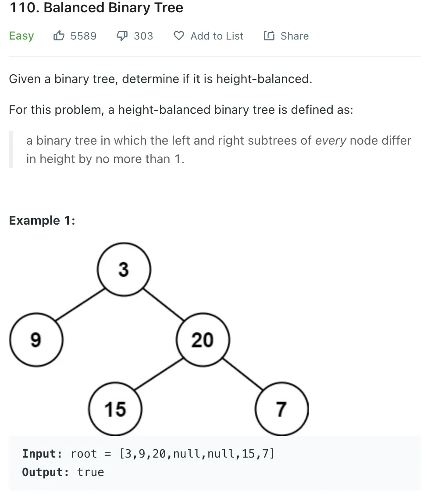
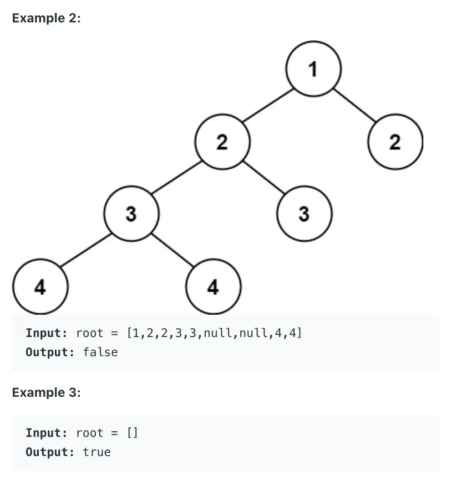

110. Balanced Binary Tree
Question


✍🏽 My Solution
Runtime: 1 ms, faster than 88.77% of Java online submissions for Balanced Binary Tree. Memory Usage: 41.5 MB, less than 99.13% of Java online submissions for Balanced Binary Tree.
class Solution {
private boolean balanced = true;
public boolean isBalanced(TreeNode root) {
height(root);
return balanced;
}
private int height(TreeNode root) {
if (root == null) return 0;
// 分别计算左子树和右子树的高度
int leftHeight = height(root.left);
if (!balanced) return 0; // 提前終止遞歸
int rightHeight = height(root.right);
if (!balanced) return 0; // 提前終止遞歸
// 这两个子树的高度不能超过1
if (Math.abs(leftHeight - rightHeight) > 1) {
balanced = false;
}
// 计算树中节点的高度
return Math.max(leftHeight, rightHeight)+1;
}
}
🧠 Thought Process
- Why did I choose this particular implementation?
- 參考王爭
- 判斷根節點的左右子節點的高度不要超過1，二叉平衡树的任何一棵子树也都必须是平衡的
- 轉換成求子樹高度
- 判斷如果balance為false，提前終止遞歸
- 遞歸函數最前面
- 子函數返回原函數後加上判斷（更好）
- What is the time/space complexity of my solution? How do I know?
- time: O(n)
- space: O(height)
Solution #1 [从上到下]
Runtime: 1 ms, faster than 88.77% of Java online submissions for Balanced Binary Tree. Memory Usage: 42.1 MB, less than 83.21% of Java online submissions for Balanced Binary Tree.
public boolean isBalanced(TreeNode root) {
if (root == null)
return true;
//分别计算左子树和右子树的高度
int left = depth(root.left);
int right = depth(root.right);
//这两个子树的高度不能超过1，并且他的两个子树也必须是平衡二叉树
return Math.abs(left - right) <= 1 && isBalanced(root.left) && isBalanced(root.right);
}
//计算树中节点的高度
public int depth(TreeNode root) {
if (root == null)
return 0;
return Math.max(depth(root.left), depth(root.right)) + 1;
}